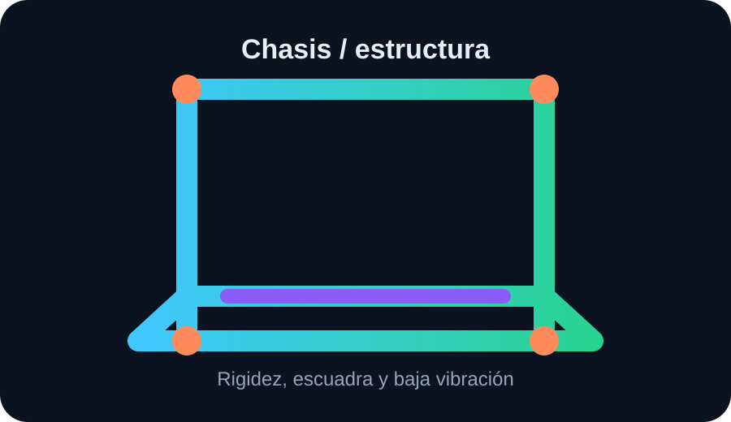
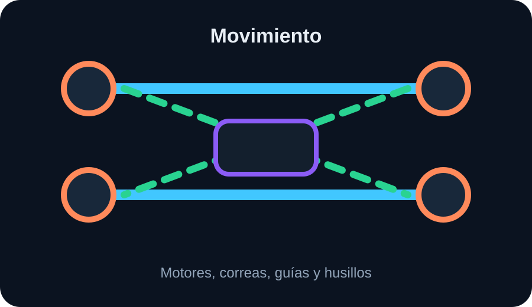
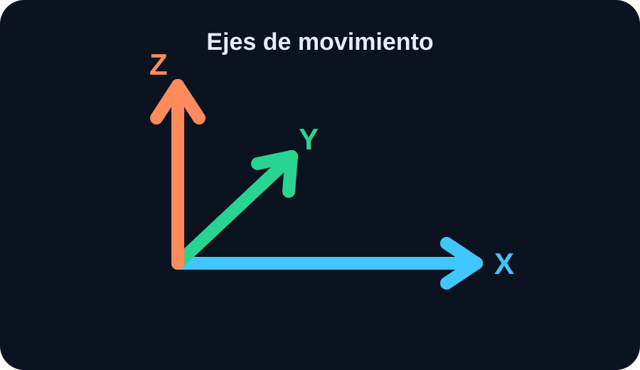
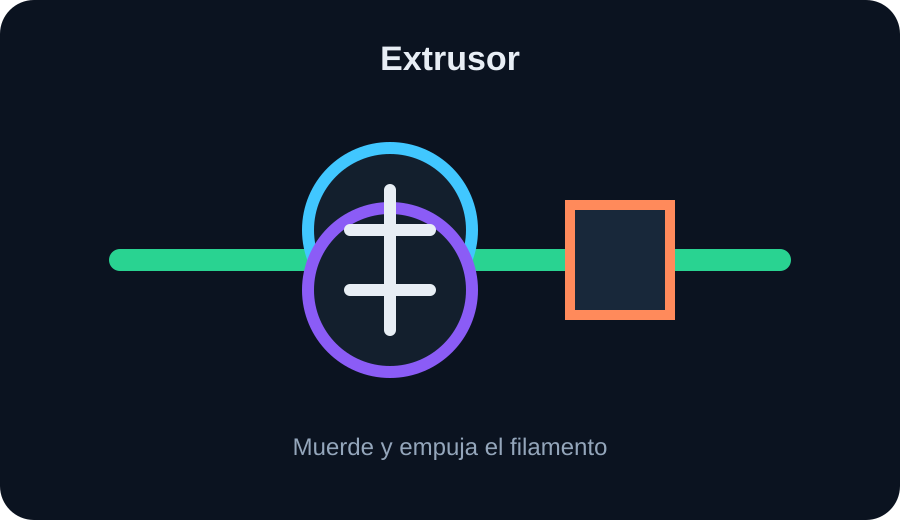
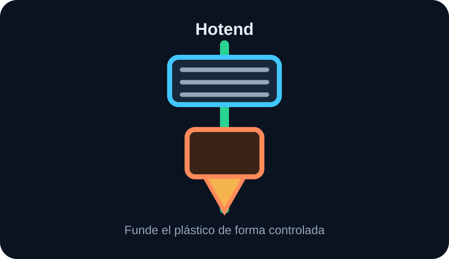
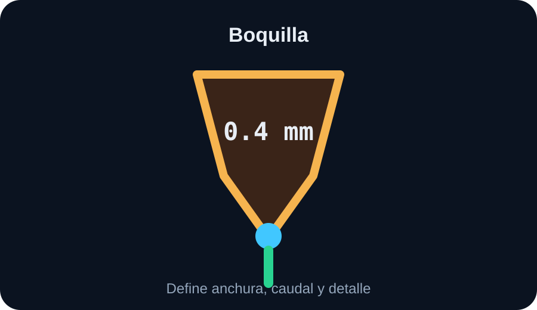
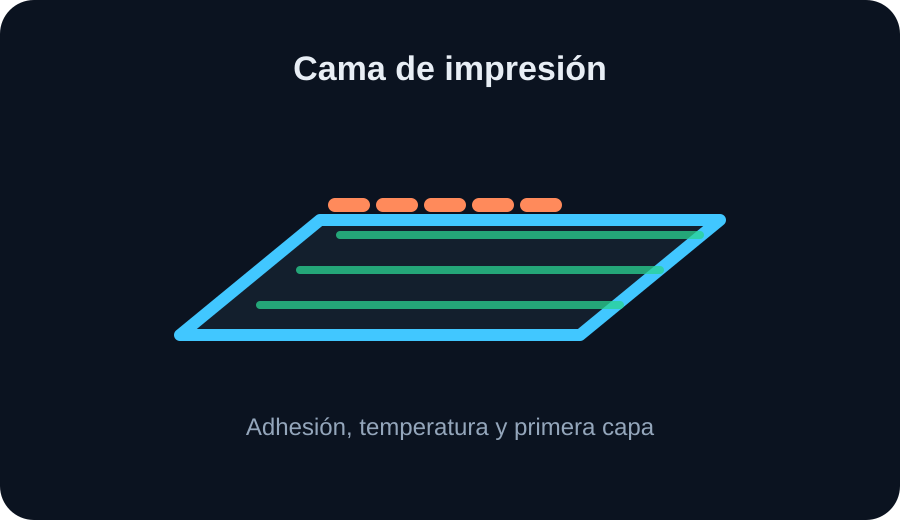
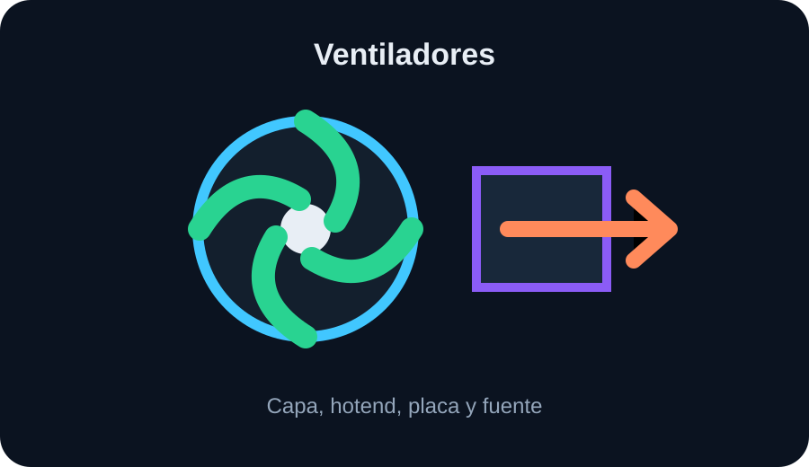
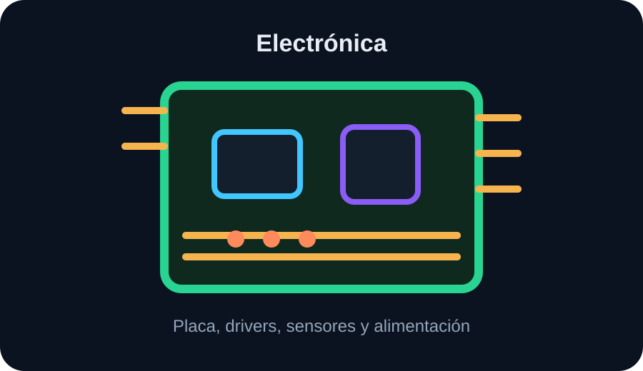
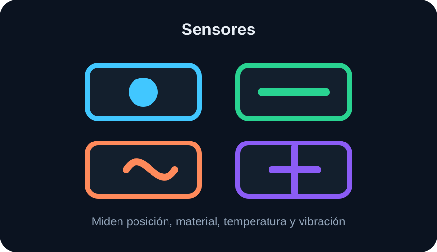

Fundamentos
Partes de una impresora 3D
Antes de tocar perfiles o materiales conviene entender qué piezas componen una impresora 3D y qué función cumple cada una.

Estructura y chasis

Qué hace
El chasis mantiene alineados los ejes, la cama y el cabezal. Si la estructura flexa, la boquilla no pasa siempre por el mismo sitio y aparecen vibraciones, capas irregulares o piezas con paredes onduladas.
- En una A1 abierta, la rigidez depende del marco, la base y la superficie donde está apoyada.
- No debe bambolearse al mover la cama o al imprimir rápido.
- Si una mesa vibra, la impresora puede estar bien y aun así imprimir peor.
Sistema de movimiento

Qué hace
Mueve la cama y el cabezal con precisión. Incluye motores paso a paso, correas, poleas, guías, rodamientos, ruedas o husillos. No imprime plástico, pero decide si cada línea cae donde debe.
- Correa floja: capas desplazadas, ghosting, esquinas poco limpias.
- Guía sucia o seca: ruido, saltos, fricción y marcas repetidas.
- Motor perdiendo pasos: desplazamiento brusco de toda la capa.
Ejes X, Y y Z

Qué mueve cada eje
La impresora coloca la boquilla usando coordenadas. En una bedslinger como la Bambu A1, el cabezal se desplaza en X y Z, mientras la cama se mueve en Y. Esto importa porque una pieza alta y estrecha puede sufrir más al moverse la cama.
| Eje | Función | Si falla se nota como |
|---|---|---|
| X | Movimiento lateral del cabezal. | Ondas laterales, capas corridas, vibración. |
| Y | Movimiento adelante-atrás de la cama en una A1. | Ghosting, piezas que vibran, pérdida de precisión. |
| Z | Altura de capa. | Z-banding, capas aplastadas o separación irregular. |
Extrusor

Qué hace
El extrusor muerde el filamento y lo empuja hacia el hotend. No lo funde: solo controla cuánto material entra. Es crítico para que no falte ni sobre plástico.
- Si patina o muerde el filamento: subextrusión, clics, piezas débiles.
- Si la presión es excesiva: filamento deformado y atascos.
- Con TPU, un extrusor directo suele ir mejor porque el filamento recorre menos distancia sin controlar.
Direct drive vs Bowden
Esta diferencia describe dónde está el extrusor respecto al hotend. En direct drive está cerca de la boquilla; en Bowden está separado y empuja por un tubo PTFE.
Direct drive
Más control sobre retracciones y flexibles. Es más cómodo para TPU y para ajustes finos. La Bambu A1 usa este enfoque.
Bowden
Menos peso en el cabezal, pero más distancia de filamento comprimible. Requiere retracciones más largas y suele ser peor con TPU blando.
Hotend

Qué hace
El hotend calienta el filamento hasta fundirlo y mantener un flujo estable. Está formado por zona fría, disipador, heatbreak, bloque calefactor, termistor, cartucho calefactor y boquilla.
- Temperatura baja: mala unión entre capas, subextrusión o atasco.
- Temperatura alta: hilos, blobs, material degradado o detalles blandos.
- Mal enfriamiento de la zona fría: heat creep y atasco por encima de la boquilla.
Boquilla

Qué decide
La boquilla marca el diámetro de salida del plástico. El estándar es 0.4 mm porque equilibra detalle, velocidad y fiabilidad. Cambiarla cambia el caudal máximo, el ancho de línea y el riesgo de atasco.
| Boquilla | Uso | Ojo con |
|---|---|---|
| 0.2 mm | Miniaturas y detalle fino. | Muy lenta y sensible a atascos. |
| 0.4 mm | Uso general. | Perfil base recomendado. |
| 0.6 mm | Piezas rápidas, fuertes o con fibra. | Menos detalle pequeño. |
| Endurecida | Carbono, fibra de vidrio, glow, metal. | Puede pedir más temperatura. |
Cama de impresión

Qué hace
Es la superficie donde se pega la primera capa. Su trabajo es sujetar la pieza durante toda la impresión y soltarla cuando se enfría. La cama no compensa una superficie sucia ni un material mal elegido.
- PLA: cama templada y superficie limpia suelen bastar.
- PETG: puede pegar demasiado en algunas superficies; conviene usar la placa adecuada.
- ABS/ASA/PC: necesitan calor estable y mejor cámara cerrada para evitar warping.
Ventiladores

No todos hacen lo mismo
Hay ventiladores de capa, de hotend, de electrónica y de fuente. El de capa enfría la pieza. El de hotend evita que el calor suba por el filamento. Confundirlos lleva a diagnósticos incorrectos.
- PLA suele necesitar bastante ventilación de capa para puentes y voladizos.
- ABS, ASA, PC y nylon pueden delaminar si reciben demasiado aire frío.
- Si falla el ventilador del hotend, puede aparecer heat creep aunque el perfil esté bien.
Electrónica y alimentación

Qué controla
La placa coordina motores, calentadores, sensores, ventiladores y comunicaciones. La fuente entrega energía a la cama, hotend y electrónica. El firmware traduce el G-code en movimientos y temperaturas reales.
- Conectores flojos: fallos intermitentes, reinicios o errores de temperatura.
- Fuente mala o dañada: riesgo de seguridad y comportamiento inestable.
- Firmware mal configurado: límites, temperaturas o movimientos incorrectos.
Sensores habituales

Qué miden
Los sensores ayudan a la impresora a saber qué está pasando, pero no sustituyen el mantenimiento. Autonivelado, fin de filamento, termistores y acelerómetros reducen errores, aunque cada uno tiene límites.
Autonivelado
Mide la cama y compensa pequeñas variaciones. No limpia la placa ni arregla una mala adhesión.
Fin de filamento
Detecta que no entra material, pero no siempre detecta un atasco parcial.
Termistor
Lee temperatura del hotend o cama. Si mide mal, todo el perfil se vuelve inseguro.
Acelerómetro
Ayuda a compensar vibraciones en máquinas rápidas mediante input shaping.
Cómo diagnosticar usando las partes
Cuando una impresión falla, localiza primero el subsistema: adhesión, movimiento, extrusión, temperatura, refrigeración o software. Así evitas cambiar diez ajustes a la vez.
| Síntoma | Parte probable | Primera revisión |
|---|---|---|
| Se despega | Cama / primera capa | Limpieza, temperatura, altura inicial. |
| Sale débil | Extrusor / hotend / temperatura | Caudal, atasco parcial, temperatura y ventilación. |
| Capas desplazadas | Movimiento | Correas, poleas, golpes, pérdida de pasos. |
| Tiene hilos | Hotend / retracción / material | Temperatura, humedad, retracción y velocidad. |
| Ondas en paredes | Chasis / movimiento | Vibración, mesa, aceleración y correas. |